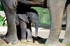
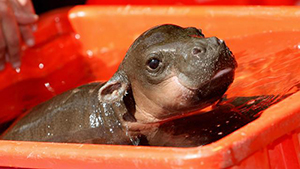
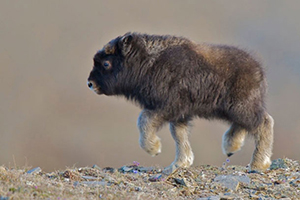
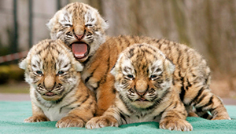
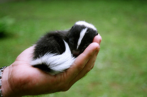

Hover over for another baby polar bear.Hover over for another baby pig.Click for a larger picture of this baby elephant.Click for a larger picture of this puppy.

This is a baby hippo.

This is a baby musk ox.

These are baby Siberian Tigers.These are baby Siberian Tigers, filtered into grayscale.

This is a baby skunk.This is a baby skunk, with inverted colors.